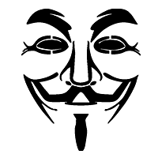
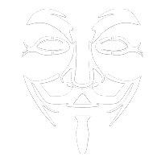
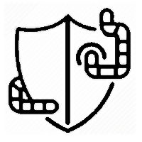
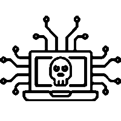
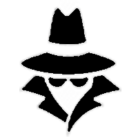

×
- Головна
- Історія
- знаменитості
- главная
- История
- знаменитости
- Main
- History
- celebrities


укр
укр
ua

англ
англ
en

рос
рус
ru
Перші комп'ютерні хакери з'явилися в Массачусетському технологічному інституті. Свою назву вони запозичили у членів групи моделювання переміщення залізничних складів, які «розбирали до гвинтика» (hack) електричні потяги, шляхи і стрілки, намагаючись знайти спосіб прискорити рух. Молоді люди вирішили задовольнити свою цікавість і застосувати набуті технічні навички при вивченні нових мейнфреймів, що проектуються в стінах інституту.
Первые компьютерные хакеры появились в Массачусетском технологическом институте. Свое название они позаимствовали у членов группы моделирования перемещения железнодорожных составов, которые «разбирали до винтика» (hack) электрические поезда, пути и стрелки, пытаясь найти способ ускорить движение. Молодые люди решили удовлетворить свое любопытство и применить приобретенные технические навыки при изучении новых мэйнфреймов, проектируемых в стенах института.
The first computer hackers appeared at the Massachusetts Institute of Technology. They borrowed their name from members of the train depot modeling group who "hacked" electric trains, tracks and arrows, trying to find a way to speed up traffic. Young people decided to satisfy their curiosity and apply the acquired technical skills in the study of new mainframes projected within the walls of the institute.
Телефонні хакери (фрікери) займалися зломом регіональних і міжнародних мереж, отримуючи в результаті можливість дзвонити безкоштовно. Один з фрікерів, Джон Дрейпер (відомий також як капітан Кранч), виявив, що простий іграшковий свисток генерує сигнал з частотою 2600 Гц. Точно такі ж характеристики забезпечував віддалений доступ до комунікаційних систем AT & T. Дрейпер сконструював спеціальний пристрій, який в поєднанні зі свистком і телефонним апаратом дав змогу йому робити безкоштовні дзвінки. Незабаром після цього в журналі Esquire була опублікована стаття під назвою «Секрети маленької синьої коробочки». У ній описувався порядок виготовлення подібного пристрою. Після цього число випадків телефонних шахрайств в Сполучених Штатах помітно зросло. Серед інших ряди правопорушників поповнив Стів Джобс, майбутній засновник компанії Apple Computer. Він організував домашнє виробництво і займався продажем таких «синіх коробочок».
Телефонные хакеры (фрикеры) занимались взломом региональных и международных сетей, получая в результате возможность звонить бесплатно. Один из фрикеров, Джон Дрейпер (известный также как капитан Кранч), обнаружил, что простой игрушечный свисток генерирует сигнал с частотой 2600 Гц. Точно такие же характеристики обеспечивал удаленный доступ к коммуникационным системам AT & T. Дрейпер сконструировал специальное устройство, которое в сочетании со свистком и телефонным аппаратом позволил ему делать бесплатные звонки. Вскоре после этого в журнале Esquire была опубликована статья под названием «Секреты маленькой синей коробочки». В ней описывался порядок изготовления подобного устройства. После этого число случаев телефонных мошенничеств в Соединенных Штатах заметно возросло. Среди других ряды правонарушителей пополнил Стив Джобс, будущий основатель компании Apple Computer. Он организовал домашнее производство и занимался продажей таких «синих коробочек».
Telephone hackers (hackers) broke into regional and international networks, resulting in the ability to call for free. One of the freakers, John Draper (also known as Captain Kranch), discovered that a simple toy whistle was generating a signal at 2600 Hz. Exactly the same features were provided by remote access to AT&T communication systems. The draper designed a special device that, in conjunction with the whistle and the telephone, allowed him to make free calls. Shortly thereafter, an article was published in the Esquire magazine entitled The Secrets of the Little Blue Box. It described the manufacturing process of such a device. Subsequently, the number of telephone fraud cases in the United States increased markedly. Among other offenders are Steve Jobs, the future founder of Apple Computer. He organized home production and was engaged in the sale of such "blue boxes".
Роберт Морріс-молодший, аспірант Корнельського університету і син наукового директора одного з підрозділів Агентства національної безпеки, запустив в мережу ARPAnet (попередницю Internet) програмного «хробака», що автоматично розсилає свої копії по електронних каналах. Морріс хотів подивитися, який вплив його програма надасть на системи, що працюють під управлінням ОС Unix. «Черв'як», випущений на волю, вразив близько 6 тис. комп'ютерів, паралізувавши важливі федеральні і університетські системи. Морріс був виключений з університету і засуджений до трьох років умовного ув'язнення та оштрафонавий на 10 тис. дол.
Роберт Моррис-младший, аспирант Корнельского университета и сын научного директора одного из подразделений Агентства национальной безопасности, запустил в сеть ARPAnet (предшественницу Internet) программного «червя», автоматически рассылает свои копии по электронным каналам. Моррис хотел посмотреть, какое влияние его программа предоставит на системы, работающие под управлением ОС Unix. «Червь», выпущенный на волю, поразил около 6 тыс. Компьютеров, парализовав важные федеральные и университетские системы. Моррис был исключен из университета и приговорен к трем годам условного заключения и оштрафонавий на 10 тыс. Долл.
Robert Morris Jr., a graduate student at Cornell University and the son of the scientific director of one of the units of the National Security Agency, has launched a software worm on the ARPAnet network, which automatically distributes copies via electronic channels. Morris wanted to see what impact his program would have on Unix-based systems. The worm, released on a whim, struck about 6,000 computers, paralyzing important federal and university systems. Morris was expelled from university and sentenced to three years of probation and fined $ 10,000.
Після тривалої і копіткої підготовчої роботи агенти спецслужб провели одночасні арешти хакерів відразу в 14 містах США. В ході операції були затримані організатори та найбільш відомі члени групи, що обмінювалися інформацією через електронні дошки оголошень. Захід був спрямований проти крадіжок номерів кредитних карт та злому телефонних і кабельних систем. В результаті в співтоваристві хакерів намітився розкол - в обмін на свободу заарештовані надавали федеральним службам цікаву для них інформацію.
После длительной и кропотливой подготовительной работы агенты спецслужб провели одновременные аресты хакеров сразу в 14 городах США. В ходе операции были задержаны организаторы и наиболее известные члены группы, обменивались информацией через электронные доски объявлений. Мероприятие было направлено против краж номеров кредитных карт и взлома телефонных и кабельных систем. В результате в сообществе хакеров наметился раскол - в обмен на свободу арестованные предоставляли федеральным службам интересующую их информацию.
After lengthy and painstaking preparatory work, intelligence agencies conducted simultaneous arrests of hackers in 14 US cities. During the operation, the organizers and the most prominent members of the group who exchanged information via electronic message boards were detained. The event was directed against credit card theft and hacking of telephone and cable systems. As a result, there was a rift in the hacker community - in exchange for freedom, those arrested gave the federal services interesting information for them.
Корпорація Microsoft опинилася в числі найбільших жертв хакерів, що завдають удари серверам доменних імен (DNS). В результаті атак, спрямованих на відмову в обслуговуванні, інформація про маршрути DNS, до якої зверталися клієнти Web-сайти Microsoft, була знищена. Злом виявили через кілька годин, але цілих два дні мільйони користувачів не могли потрапити на сторінки Microsoft.
Корпорация Microsoft оказалась в числе крупнейших жертв хакеров, наносят удары по серверам доменных имен (DNS). В результате атак, направленных на отказ в обслуживании, информация о маршрутах DNS, к которой обращались клиенты Web-сайты Microsoft, была уничтожена. Взлом обнаружили через несколько часов, но целых два дня миллионы пользователей не могли попасть на страницы Microsoft.
Microsoft has been among the biggest victims of Domain Name Stacker (DNS) hackers. As a result of denial-of-service attacks, information about DNS routes accessed by Microsoft Web site clients was destroyed. The hack was discovered in a few hours, but for the whole two days, millions of users were unable to access Microsoft pages.
Сучасні хакери набагато покращили навики у своєму ділі. Також вони розділилися на 2 категорії "Black hat" і "White hat", тобто є чорні та білі хакери, одні боряться зі злом, а інші вчиняють злочини. Багато хакерів перейшли з темної на білу сторону і сьогодні працюють над новою кібербезпекою. Але залишаються й ті, які грабують банки, руйнують життя людей, викрадають важливу інформацію.
Современные хакеры намного улучшили навыки в своем деле. Также они разделились на 2 категории "Black hat" и "White hat", то есть черные и белые хакеры, одни борются со злом, а другие совершают преступления. Многие хакеры перешли с темной на белую сторону и сегодня работают над новой кибербезопасностью. Но остаются и те, которые грабят банки, разрушают жизни людей, похищают важную информацию.
Modern hackers have improved their skills in their business. They are also divided into 2 categories, "Black hat" and "White hat", that is, black and white hackers, some fight evil and others commit crimes. Many hackers have moved from the dark to the white side and are working on a new cybersecurity today. But there are also those who rob banks, destroy people's lives, steal important information.
Зародження хакерства
Зарождение хакерства
The origin of hacking
Телефонні фрікери
Телефонные фрикеры
Phone Freezers
 Вірус "Хробак"
Вирус "Червь"
virus "Worm"
Операція Sundevil
Операция Sundevil
Operation Sundevil

Атаки на сервери DNS
Атаки на сервера DNS
Attacks on DNS servers
Сучасні хакери
современные хакеры
Modern hackers
